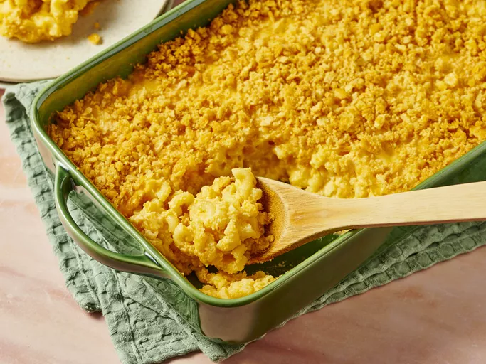

Mac and Cheese

Img source Allrecipes
Description
Quick and easy mac and cheese recipe, that is perfect for a weeknight dinner.
Even better, the kids are sure to love it! Can be made with the ingredients listed below or subbed for vegan options.
Ingredients
- 2 1/2 cups elbow macaroni
- 1/4 cup butter
- 1/4 cup plain flour
- 1/2 tsp salt
- 4 cups milk
- 500g shredded cheddar cheese
- 1/4 cup butter, melted
- 1 sleeve buttery round crackers, crushed
Steps
- Gather all ingredients. Preheat oven to 175 degrees C.
- Bring a large pot of lightly salted water to a boil. Cook elbow macaroni in the boiling water, stirring occasionally, until tender yet firm to the bite, about 8 minutes; drain well.
- Melt 1/4 cup butter in a large saucepan over medium heat. Stir in flour and salt; cook, stirring constantly, for 2 minutes. Whisk in milk and simmer, stirring frequently, until mixture thickens slightly, about 5 minutes.
- Turn off the heat and stir in Cheddar cheese, in batches, until cheese is melted. Add macaroni and stir to coat.
- Pour into a 9x13-inch baking dish. Mix the remaining 1/4 cup of melted butter and crushed crackers together in a bowl; scatter evenly over macaroni mixture.
- Bake in the preheated oven until golden brown on top, about 45 minutes.
Home